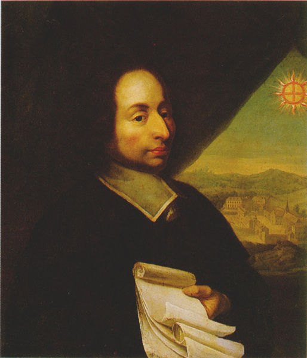

Blaise Pascal
Omul care schimbă vieți

Blaise Pascal cu aproximativ 370 de ani în urmă
Aici vei afla în câteva cuvinte despre viața lui Blaise Pascal:
- 1623 - În ziua de 19 iunie in Clermont-Ferrand, Franța(acum regiunea Auvergne) se naște Blaise Pascal, viitor matematician, fizician și filosof francez. Blaise Pascal a fost al treilea copil al lui Etienne Pascal și singurul său fiu. Mama lui Blaise a murit cand acesta avea doar trei ani, micul Blaise fiind foarte afectat de această pierdere. Auvergne este locul copilariei lui Pascal, despre care se spune că era o fire bolnăvicioasă și că nu putea suporta vederea apei. Totuși, în cercetarile sale apa, și în general lichidele, au constituit obiectul experiențelor. Legea care-i poartă numele arată ca lichidele aflate în vase închise transmit integral prsiunea exercitată din exterior asupra lor.
- 1632 - Etienne și cei patru copii ai săi au părăsit Clermont pentru a se stabili la Paris, iar tatăl, un matematician cu vederi mai neortodoxe asupra educației, a stabilit că Blaise nu va învăța nimic despre matematică până la vârsta de 15 ani. Impulsionat de această interdicție, la vârsta de 12 ani, Blaise a început să învețe geometrie de unul singur, descoperind că „suma unghiurilor unui triunghi este egala cu 2 unghiuri drepte“. Când a aflat tatăl său, s-a îmbunat și i-a permis lui Blaise sa aibă o copie a „Elementelor“ lui Euclid. Dovedea un deosebit interes față de cunoașterea cauzelor diferitelor fenomene ale naturii și dacă argumentele ce i se aduceau nu erau suficiente, le căuta el însuși. Se povestește despre geniul său, că era de ajuns să i se indice un domeniu al matematicii sau al fizicii pentru a intervenii acolo cu forța sa creatoare. Astfel, când la întrebarea sa: „Ce sunt matematicile?” tatal său i-a raspuns că ele ne învață să construim figuri corecte și să aflăm relațiile dintre ele, Pascal, pornind de la această indicație, a reconstruit geometria lui Euclid pînă la propoziția 32 din cartea I-a a Elementelor, deși nu cunoștea nici numele de „cerc” si „linie dreaptă”; câteva indicații asupra experiențelor lui Torricelli l-au condus la stabilirea teoriei asupra presiuni atmosferice și a echilibrului fluidelor; o problemă amuzantă pusă de un prieten privitor la jocurile de noroc a constituit punctul de plecare pentru crearea calculului probabilităților; din câteva date neprecise asupra calculului indivizibililor lui Cavalieri a fost în stare să-l creeze din nou și să-l aplice cu succes la „cicloida”.
- 1637 - La vârsta de 14 ani, Blaise Pascal a început să-l însoțească pe tatăl său la întrunirile lui Mersenne de la Paris, la care participau Roberval, Auzout, Mydorge, Desargues, ultimul devenind un model pentru tânărul Pascal.
- 1639 - La vârsta de 16 ani, Blaise a prezentat la aceste întruniri câteva teoreme despre geometria proiectivă, incluzând hexagonul mistic al lui Pascal. în decembrie, familia Pascal a părăsit Parisul pentru a locui la Rouen unde Etienne a fost numit colector de taxe pentru Normadia de Sus și unde Blaise publică în februarie 1640 "Essay on Conic Sections" (Eseu despre secțiunile conice).
- 1642-1645 - După ce a lucrat 3 ani Pascal a inventat primul calculator mecanic, Pascaline pentru a-l ajuta pe tatăl său în munca sa de colector de taxe, primul instrument automat de calcul, prin care se putea efectua cele patru operatii aritmetice.
- 1646 - Tatăl său s-a rănit la picior și a trebuit să se recupereze acasă, în grija a 2 frați mai tineri dintr-o miscare religioasă, care au avut o influență asupra tânărului Pascal care a devenit profund religios. Tot din această perioadă datează și primele încercări de studii asupra presiunii atmosferice.
- 1647 - Demonstrează că vidul există, după ce la 25 septembrie el și Descartes s-au contrazis asupra acestui adevăr.
- 1648 - Pascal observă că presiunea atmosferei scade cu înălțimea și a dedus că vidul există deasupra atmosferei.
- 1651 - În septembrie, moare tatăl sau Etienne Pascal, iar într-o scrisoare adresată uneia din surori dă un adânc ințeles creștin morții în general dar și morții tatălui său în particular, idei care formează baza pentru lucrările sale filozofice ulterioare, "Les pensées"(Cugetările).
- 1653 - Din mai, Pascal scrie "Récit de la grande expérience de l'équilibre des liqueurs" (Tratat despre echilibrul lichidelor) în care explică legea presiunii.
- 1654 - În urma corespondenței cu Fermat a pus bazele teoriei probabilității. În această perioadă are și probleme de sănătate, dar continuă lucrul până in octombrie 1654. Pe 23 noiembrie, în urma unei experiențe religioase își dedică viața Creștinătății. După această dată, Pascal face vizite la mănăstirea Jansenista Port-Royal des Champs, la cca. 30 de km sud-vest de Paris.
- 1656 - Publică lucrări anonime reunite în "Lettres provinciales".
- 1656-1658 - Între acești ani, scrie "Les pensées", cea mai cunoscută lucrare teologică a lui Pascal.
- 1662 - Moare la 39 de ani, pe 19 August, în urma extinderii tumorii maligne din stomac și este înmormântat la St. Étienne-du-Mont în Paris. Lui Pascal i se datorează ideea constructiei ceasornicului de mână, însă invenția cea mai spectaculoasă a fost omnibuzul, pe care l-a lansat la Paris, către sfârșitul vieții sale. Construind un barometru, Pascal a indicat și cea mai interesantă din aplicatiile lui si anume, măsurarea înălțimilor. În timpul cât se ocupa cu problemele de fizică , Pascal nu a părăsit cu totul geometria, reușind să elaboreze „Tratatul asupra conicilor” și „Tratatul despre triunghiul aritmetic”. Din cei 39 de ani de viață, 7 au fost consacrați științelor. Opera sa este redusă ca volum, însă valoarea ei este imensă.
"Learning is the only thing the mind never exhausts, never fears, and never regrets." -- Leonardo da Vinci